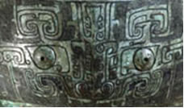
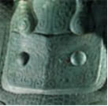
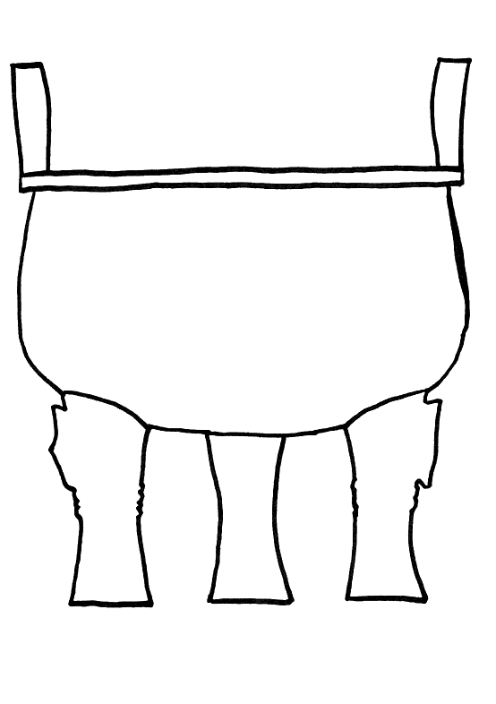
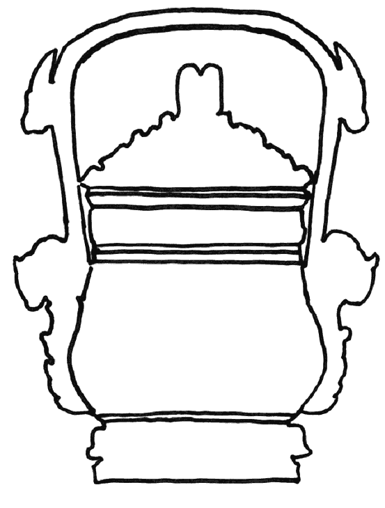
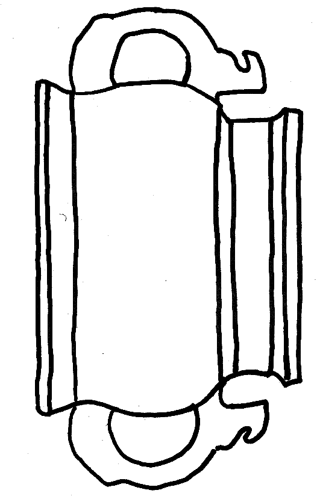

Follow-up 8 |
|
Objectives: To examine the decorative aesthetic of the Ancient Chinese.
Materials: Drawing materials
Class set-up: Whole class introduction, small groups and individual techniques.
Vocabulary: taotie, decoration, motif
Activity: Ask the pupils to read the bronze inscription section of the Writing Explore.
 A taotie is a decorative motif that is found on many Ancient Chinese Bronzes. A taotie is a face that resembles the face of an animal, but is highly stylized and not at all naturalistic. The motif has confused scholars for centuries. It may have a specific meaning; it could be a heavenly or mythical creature of some sort or may simply be a decorative device.  Explain to the class what a taotie is. Ask them to find one on the site. What do they think the taotie could mean, what does it represent? Hand out drawing materials with the different shapes of bronze vessels (attached to file). Tell them about what these different shapes would have been used for (from the Bronze Vessel Glossary). Ask the children to look carefully at some of the bronze vessels on the site. They should decorate their bronze vessel with a taotie and also use the other types of decoration that they find on the bronze vessels (point out some bird or dragon shaped motifs). ding  you  gui Background information:
Bronze Vessel Glossary
© The British Museum |